Este tutorial explica como fazer os orçamentos no sistema
corretamente e no final dessa página tem um video completo mostrando como fazer.
Passo a passo
Já logado no sistema Lukma.
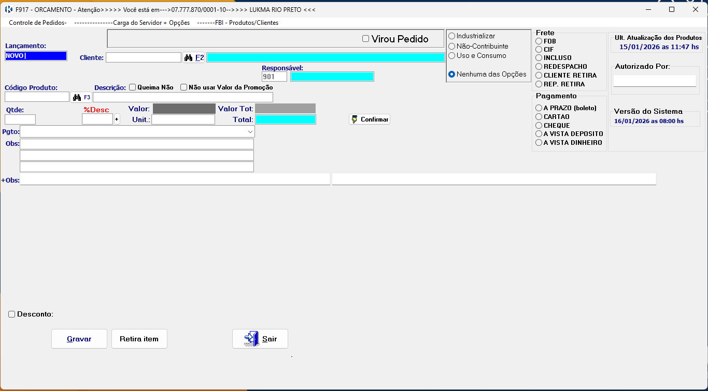
Selecionar o Cliente usando o F2 (do teclado) ou clicar na Lupa.
No Campo Lançamento você pode digitar o o numero do pedido ou orçamento para abri-lo.
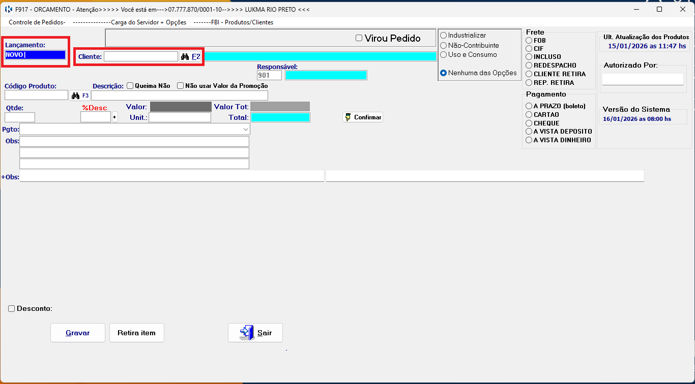
Selecionar o cliente desejado dando um enter no selecionado ou confirmar.
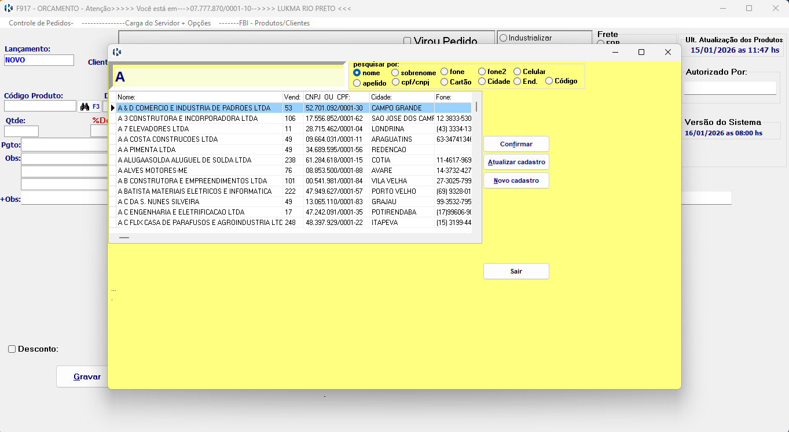
Você pode digitar o código d produto, aperta F3 (do teclado) ou selecionar a lupa.
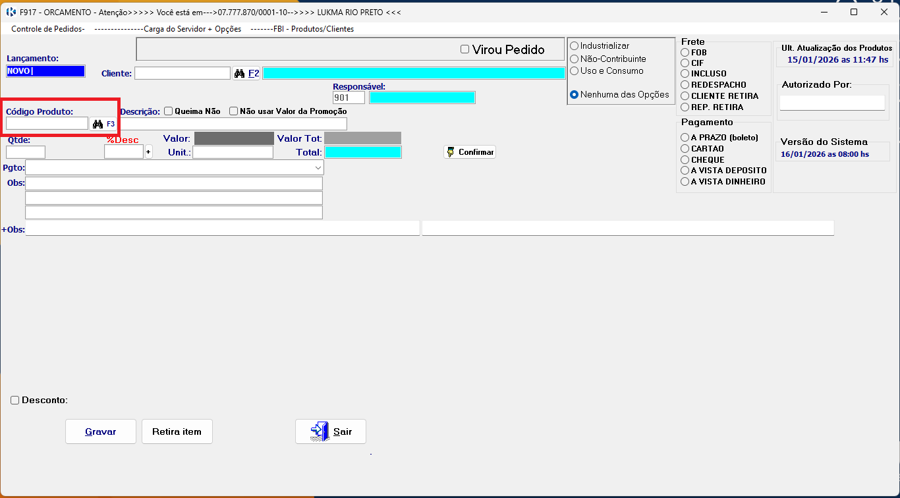
Selecione o produto desejado caso clique no F3 ou na lupa.
Caso tenha produto em promoção ou queima vai aparecer com cores diferentes como Azul para promoção e Vermelho para queima, segue informativo na pagina de Promoções.
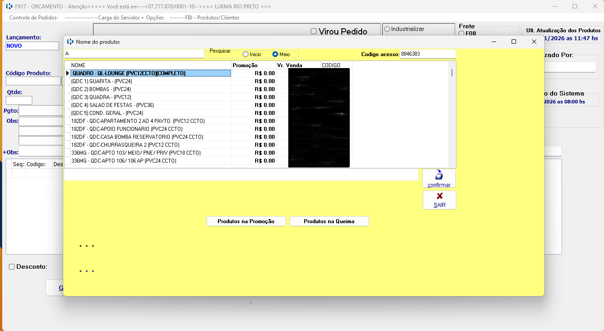
Com produto selecionado você pode adicionar quantidade, desconto ( se o desconto for maior do que o permitido tem a autorizaçã do Supervisor ou Gerente), você pode colocar o Nome do Supervisor ou Gerente no campo Autorizado Por:.>
Precionando enter até o produto exibir logo a baixo na lista de produtos adicionados.
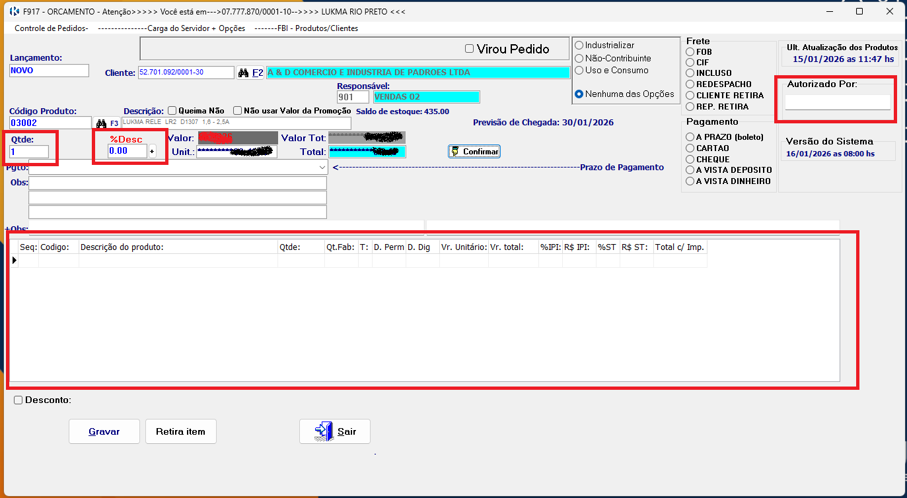
Também preenchendo os campos de Frete, pagamento, prazo do pagamento e OBS caso tenha.
Se o pedido for só um orçamento gravar e caso for um pedido marca a caixa de Virou Pedido e na sequencia gravar (podendo salvar como orçamento e abrir esse orçamento para depois virar um pedido).
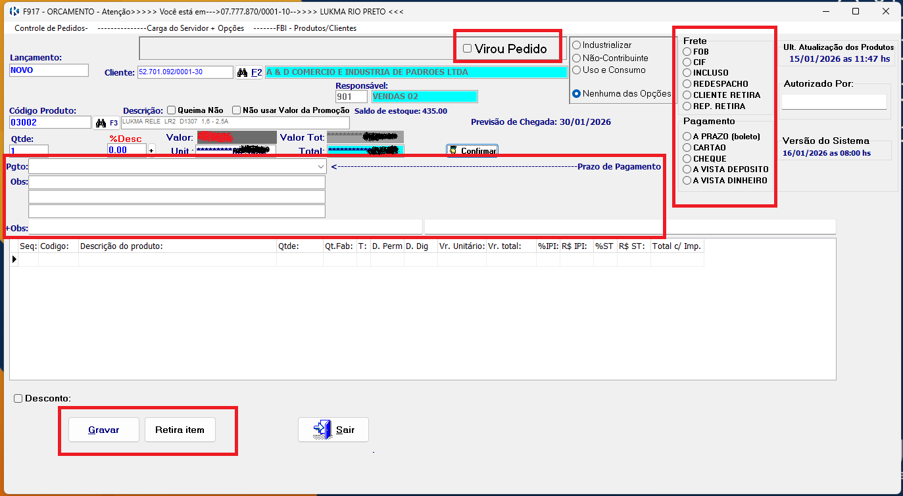
Confirmar caso realmente for salvar esse Orçamento ou Pedido.
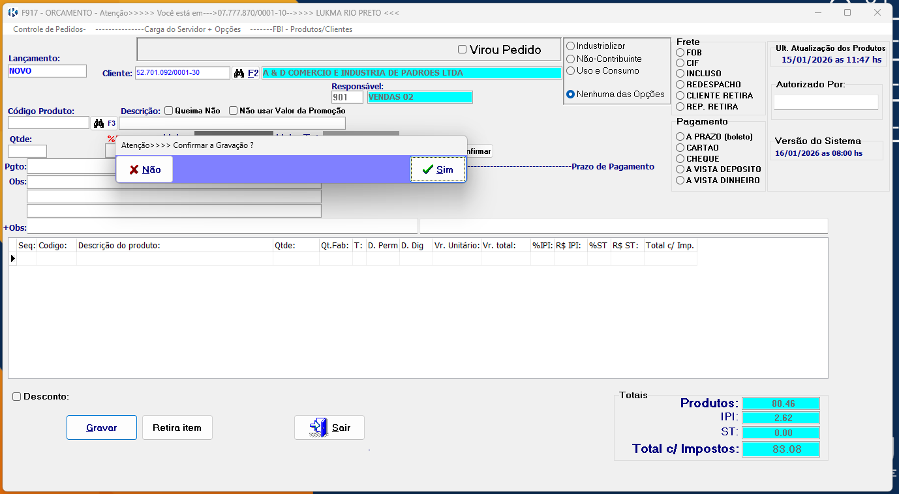
Ao clicar em Gravar, vai aparecer que foi enviado com Sucesso.
Salvar o PDF com ou sem Desconto.
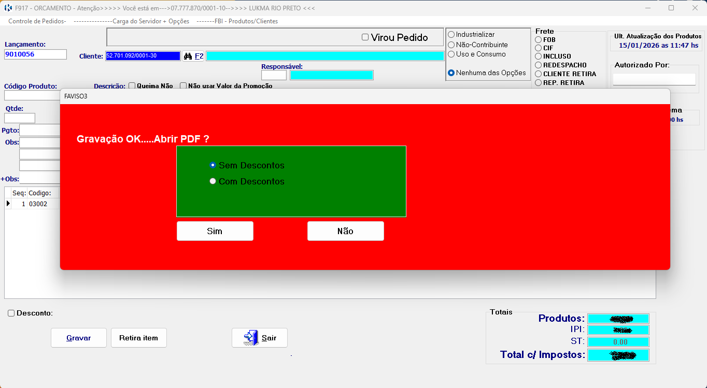
Para visualizar pedidos, você pode ir em: Carga do Servidor + Opções > Abrir pasta dos Pedidos, ou pode abrir a pasta que fica na Área de Trabalho chamada Pedidos.
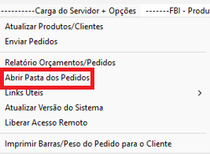
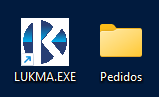
Vídeo explicativo
Em caso de erro de acesso, verifique seus dados ou entre em contato
com o suporte.